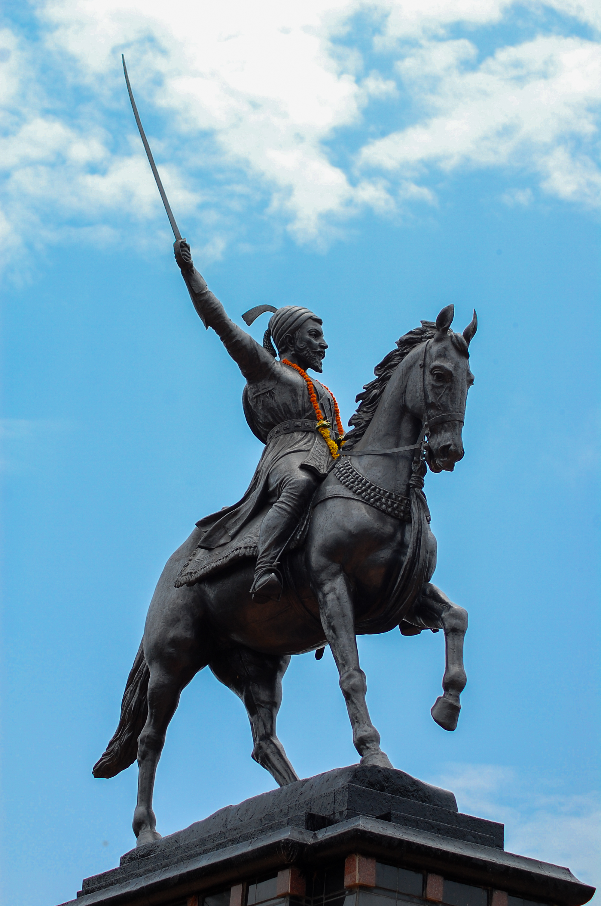

Chhatrapati Shivaji Maharaj was the founder of the Maratha Empire. He was one of the bravest and most intelligent kings in Indian history.
He was born on 19 February 1630 at Shivneri Fort. Shivaji Maharaj created a strong and disciplined army and established a well-organized administration.
He is known for his courage, military strategies, and respect for women. Shivaji Maharaj always fought for justice and the welfare of his people.
Even today, Shivaji Maharaj is remembered as a great warrior, visionary leader, and inspiration for millions of people.